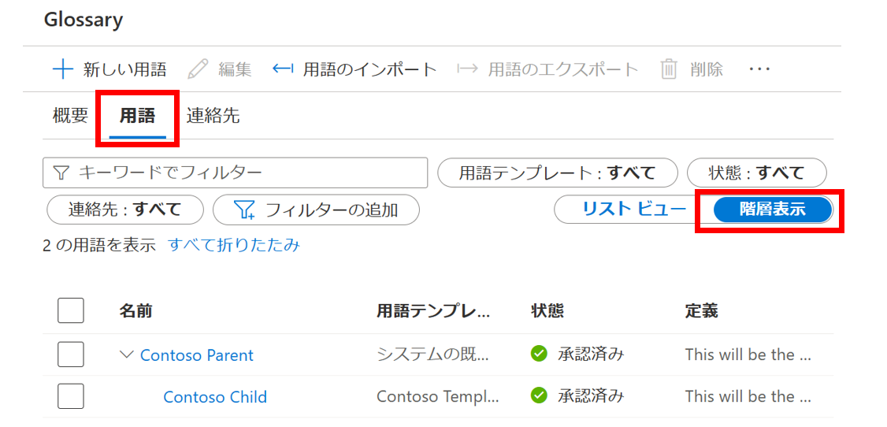

Module 04 - 用語集
はじめに
📢 導入
用語集は、データ用語集またはビジネス用語集と呼ばれることもあり、ビジネス用語とその定義の一覧です。用語集は、データに関する情報を維持し、整理するための重要なツールです。組織がビジネスを行う上で一般的に使用、共有される情報のドメインナレッジを把握するために使用されます。
用語集のサイズや表現に決まりはありません。抽象的であったり、ハイレベルであったりしますが、属性、依存関係、関係性、定義などを詳細に記述することも可能です。用語集は、単一のデータベースだけに限定されるものではなく、多くのアプリケーションや複数のデータベースを対象とすることもできます。複数のアプリケーションが連携して、特定のビジネスニーズを達成することができます。つまり、用語集とデータ属性の関係は、1対多の関係です。また、用語集には、アプリケーションやデータベースそのものを表す概念よりも多くの概念を含めることができ、捕捉することができます。
用語集を実装する際には、ビジネス用語や定義をどのように構造化するかを考えることが重要です。たとえば、階層を使用し、これらを次のようなビジネス・ドメインと整合させることができます。例えば、財務、マーケティング、販売、人事などです。ビジネス・メタデータに関する追加情報を取得するために、用語テンプレートを導入することもできます。また、頭字語、関連語、同義語など、ビジネス用語をリンクするための関係を使用することもできます。これらの関係は、重複する名前の用語の作成を回避し管理のオーバーヘッドを削減するのに役立ちます。
この実習では、システムおよびカスタム用語テンプレートを使用して用語を作成する方法について学習します。また、用語をインポートおよびエクスポートする方法についても学習します。最後に、用語をデータ資産にリンクすることで、テクニカルメタデータをビジネスメタデータに関連付ける方法について学習します。
🤔 前提条件
- アクティブなサブスクリプションを持つAzureアカウント
- Microsoft Purview アカウント (Module 01 を参照)
🎯 ゴール
- システム・デフォルト用語テンプレートを使用して、用語集に用語を作成する
- カスタム用語テンプレートを使用して用語集に用語を作成する
- CSVファイルを使用して用語を用語集に一括インポートする
- 用語集からCSVファイルに用語を一括エクスポートする
- データカタログのアセットに用語を割り当てる
- 既存の用語を関連用語と連絡先で更新する
用語集の作成
-
Microsoft Purview ガバナンス ポータルを開き、データ カタログから [用語集] に移動し、[新しい用語集] をクリックします。
-
以下の値をコピーして適切なフィールドに貼り付け、Azure AD ID をスチュワードおよびエキスパートとして設定し、[作成] をクリックします。
- 名前
Glossary - 説明
用語集は、データベース、テーブル、カラムなどの資産にマッピングできるビジネス用語の語彙集です。用語集は、一般的にデータリポジトリに関連する専門用語を抽象化し、ビジネス全体の共通言語を確立するのに役立ちます。
- 名前
用語の作成（デフォルトの用語テンプレート）
-
Purview ガバナンス ポータルを開き[データカタログ]から[用語集]を開きます。
-
[新しい用語]をクリックします。
-
[システムの規定]の用語テンプレートを選択し[続行]をクリックします。
Note
用語テンプレートは、用語の属性を決定します。システムの既定の用語テンプレートには、基本的なフィールド (名前、定義、ステータスなど) のみがあります。一方、カスタム用語テンプレートは、追加のカスタム属性を取得するために使用できます。詳細については、「ビジネス用語集の用語テンプレートを管理する方法」を参照してください。
-
用語の[状態]を[承認済み]に変更し各フィールドに次の値を入力して[作成]をクリックします。
- 状態
承認済み - 名前
Contoso Parent - 定義
This will be the parent term. - 頭文字
CP - リソース名
Microsoft Purview - リソースリンク
https://aka.ms/Azure-Purview
- 状態
用語の作成（カスタム用語テンプレート）
-
Purview ガバナンス ポータルを開き[データカタログ]から[用語の管理]をクリックします。
-
[新しい用語]をクリックします。
-
[新しい用語テンプレート]をクリックします。
-
用語テンプレートの[名前]（Contoso Template）を指定し[新しい属性]をクリックします。
-
属性フィールドに次の値を設定し[適用]をクリックします。
- 属性名
Business Unit - フィールドの種類
Single choice - 選択肢
Sales,Marketing,Finance,Human Resources,IT

- 属性名
-
[作成]をクリックします。
-
[Contoso Template]を選択し[続行]をクリックします。
-
用語の[状態]を[承認済み]に変更し各フィールドに次の値を入力して[作成]をクリックします。
- 名前
Contoso Child - 定義
This will be the long description for the child glossary term. - 親
Contoso Parent - Business Unit
Marketing
- 名前
-
[用語]タブで[階層表示]を選択して用語集を階層表示します。

一括インポート
-
用語インポートサンプル（import-terms-sample.csv）をローカルマシンにダウンロードします。 [用語集]で[用語のインポート]をクリックします。
-
[システム規定値]のテンプレートを選択し[続行]をクリックします。
-
[参照]をクリックしダウンロードしたimport-terms-sample.csvを開き[OK]をクリックします。

-
完了すると親の下に50の追加の用語が表示されます。（Workplace Analytics）
Note
上部のフィルタを使用して特定タイプの用語をすばやく見つけることができます。
例: 状態 = 承認済み -
[用語集]画面ですべての用語（トップ チェックボックス）をチェックし、さらにWorkplace Analyticsに属さない用語（Contoso Parent、Contoso Child）の選択を解除し [用語のエクスポート]をクリックします。 エクスポートが成功した場合は、CSVファイルをダウンロードできます。
アセットへの用語の割り当て
-
検索バーにアスタリスク（
*）を入力しEnterを押してワイルドカード検索を実行します。検索結果からQueresByStateをクリックし詳細を表示します。 -
[編集]をクリックします。

-
[用語集の用語]ドロップダウン メニューを開き[Contoso Child]を選択し[保存]をクリックします。
-
用語集の詳細を表示するには[用語集の用語]からハイパーリンクが設定された用語をクリックします。
-
[最新の情報に更新]をクリックして、用語が割り当てられている[カタログ アセット]を表示します。
既存の用語の更新
-
[用語集の用語]画面で既存の用語（Aggregation）を開きます。
-
[関連]タブに移動し[編集]をクリックします。

-
ドロップダウン メニューを使用して2つの用語を[同意語]として割り当てます。
Note
同義語は、同じまたは類似の定義を持つ他の用語です。ここで、関連用語は、関連しているが定義が異なる他の用語です。
-
ドロップダウン メニューを使用して2つの用語を[関連用語]として割り当てます。
-
[連絡先]タブに移動して[エキスパート]と[スチュワード]を割り当て[保存]をクリックします。
Note
用語集の用語は、2 つの異なるタイプの連絡先に関連付けることができます。エキスパートは、通常、ビジネス プロセスまたは対象分野の専門家です。スチュワードは、データオブジェクトまたはビジネス用語の基準を定義します。それらは、品質基準、命名法、規則を推進します。